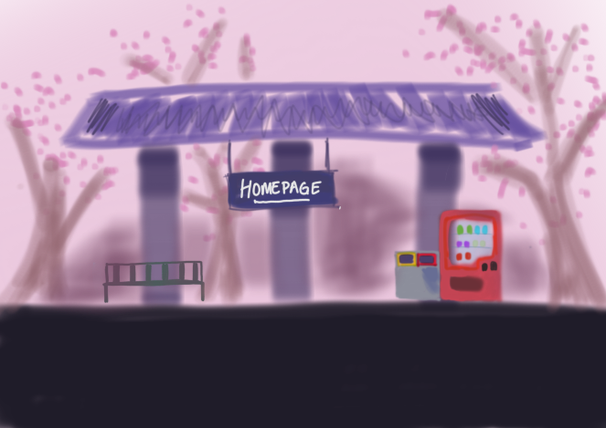

INTERACTIVE MEDIA TRAIN LINE
Welcome to Station: Week 3
Week 3 Workshop Activities

This is a more detailed iteration of the background of my website, featuring a small train station and a train that will enter and exit upon loading.

This is the version of the station without the train. The entire background will eventually be redrawn as a pixelated background.
Artistic Inspiration
Credit: Chameleon Pixel Artist @grigoreen

Credit: Alamy https://www.alamy.com/vector-pixel-art-train-side-isolated-image360548532.html
Week 3 Workshop Activities
This week's hunt'n'gather had us collecting a few noteworthy web archives or galleries. These were the ones I chose.